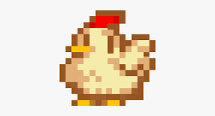
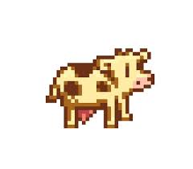

animales
gallinas
las gallinas son los animales mas varatos en stardew y les convendria llenar un gallinera con ellas jeje

vacas
las vacas son animales que ta,bien convienen tenerlas siempre porque genera demasiadasd ganancias con la leche aparte de que te da queso venderla asi nomas es mucha ganancia al principio
